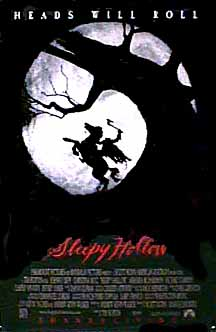

Contents | Features | Reviews | Books | Archives | Store |
 |
|
| Movie Credits | Buy It! |
Sleepy Hollow
Review by
Elias Savada
Posted 19 November 1999
|  |
Directed
by Tim Burton. Starring
Johnny Depp, Written
by
Andrew Kevin Walker; |
The
latest magnum horror opus from the mixed-up mind of Tim Burton is an fx feast
for the eyes, but leaves a hollow spot in the spiritual soul. Half filled with
ambitious set dressings, sumptuous gothic atmosphere, and gnarly, fog-drenched
countrysides, but half empty with a deadly serious, draggy script and especially
over-loquacious, and, frankly, predictable ending, Sleepy Hollow is
second-tier Burton, below the ever-watchable upper-echelon Beetlejuice and
Edward Scissorhands, yet towering over the overblown, bargain basement
camp of Mars Attacks! Flattering himself with passing references to his earlier
works -- most noticeable being Danny Devito’s Penguin teeth now gumming up the
Hessian orifice of Christopher Walken in mercenary, pre-Headless Horseman mode,
or Johnny Depp’s scissor-like surgical tools -- Burton models his late 18th
century world after the Hammer schlockworks of the 1950s and 1960s. Even
Christopher Lee, who blessed many of those British horror entries, keeps that
appropriate tone with a short stump as a curly burgomaster more at home in a
torture chamber than the courtroom. (Of course, the late Vincent Price, another
Hammer graduate, made a poignant contribution to Scissorhands.) Yet while the
film screams with a "watch me" sense of evil fantasy and bloody gore
(truth in advertising: heads do roll!), it creaks along when the cast tries to
explain away the mysterious deaths that are occurring in the small, moneyed, but
secret-entrenched Hudson Valley Dutch farm community.
The
actors are effective in spurts, generally when being chased or stumbling around
in the darkness, rain, and mud. Martin Landau, alumnus of Ed Wood, kicks off
early, making a momentary, pre-credit appearance before losing his head to the
swish of a glistening blade. Too briefly, Walken is at his glorious excessive
best in framing the foreign-born killer soon dispatched to become a legend in
his own tomb. Twenty-something and blonde trellised Christina Ricci is a
disquieting, beguiling daughter of the landed gentry. She’s an uncommonly
strong ingenue in search of an out of bodice experience with eccentrically
resourceful police constable Ichabod Crane (Depp, coming back for his third
go-round with Burton -- after the two Ed films). The detective, banished to
Sleepy Hollow from New York City for his unorthodox and unappreciated scientific
approach to crime, is an unwilling hero, meek as Clark Kent (even to the point
of sporadically sporting some oversized goggles), yet curious as a black cat.
And how appropriate that the person doing all that crisp, dastardly swordplay is
none other than a faceless Reg Park, a.k.a Darth Maul, the summer’s number-one
prince of darkness.
The
film’s most effective star is the nightmarish hamlet, surrounded by trees
bleached of leaves, its paths sluggish with wet earth, the off-screen wolves
howling as dusk settles on the blue-gray homes. Most of the crew has been around
the bloody block with Burton on more than one occasion (and some for more than
two decades), hence the feeling of déjà vu, particularly when looking at the
film’s inspired design element. Production designer Rick Heinricks’
"stylized naturalism" uses time-proven theatrical means to create
unnatural perspective. Cinematographer Emmanuel Lubezki (A Little Princess,
Like Water for Chocolate) tightly composed color palette captures the
landscapes’ agony, while Costume Designer Colleen Atwood’s period garb will
probably wrestle one of a few technical nominations the film rightfully merits.
But
the weaknesses lie in those talky conspiracy/mystery portions of the story and
the development of Depp’s character, reduced to a bumbling ninny at one point,
springing back into action the next with faith restored, while often haunted by
strange visions featuring Lisa Marie. For action fans, the Headless Horseman
rides off with all the aces (the black ones, of course). This mythic creature,
as sculpted by Burton and his merry pranksters, proves a terrifying figure,
emerging from his womblike netherworld beneath a blood-for-sap "Tree of the
Dead" fully mounted on his dark black horse. The thunder/lightning
combination that announces his arrival gets a bit tiresome, but when he swings
his blade, the decapitations are anything but standard drops in the bucket.
Burton and Depp fans should embrace the weird world of Sleepy Hollow, but other heads in the audience may bob in disappointment, the infrequent droll humor too little to offset the vapid story stretches.
Contents | Features | Reviews
| Books | Archives | Store
Copyright © 1999 by Nitrate Productions, Inc. All
Rights Reserved.